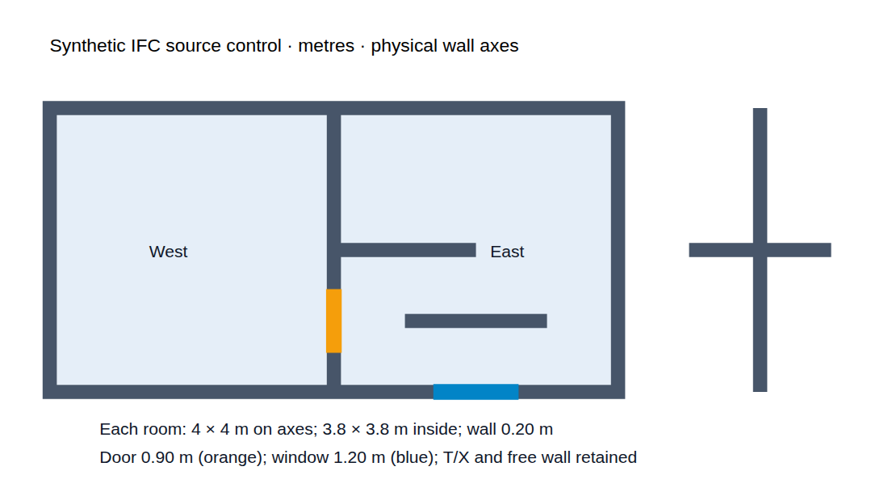
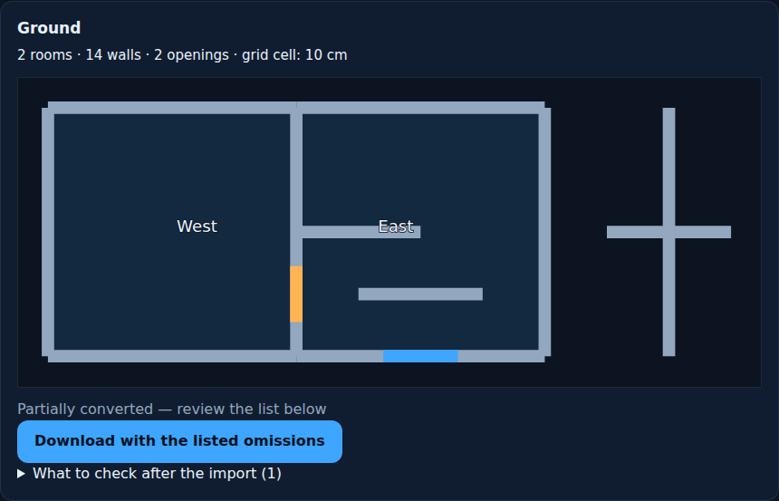
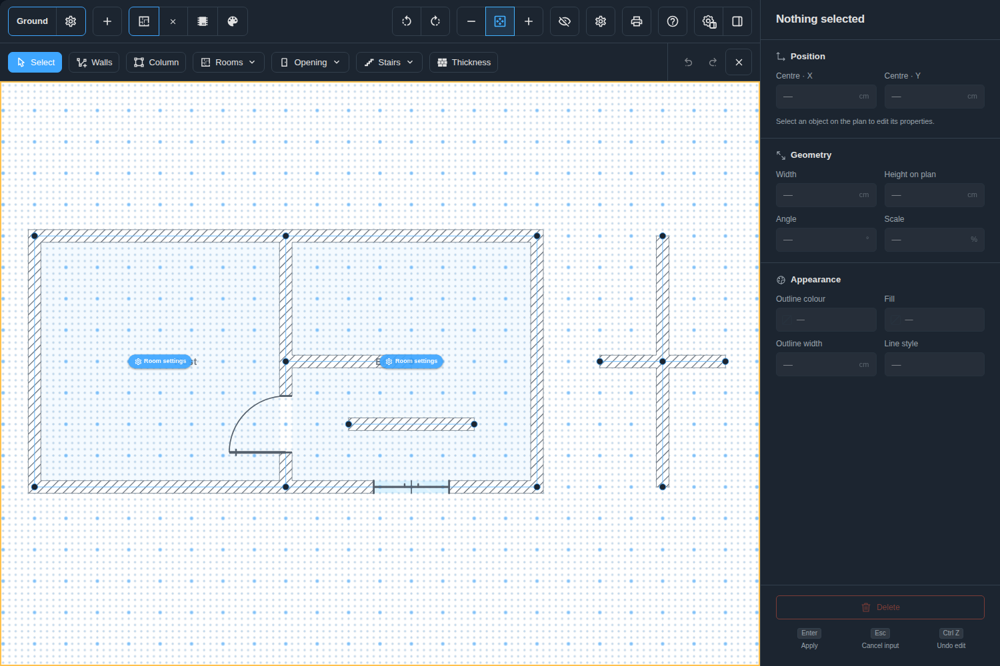

Синтетические данные. Chromium 151.0.7922.34, Linux/WSL. Четыре кадра на согласование, не пользовательский проект.
Независимо нарисован по исходным метрам фикстуры: две комнаты по 4×4 м по осям, стена 20 см, дверь 90 см, окно 120 см, T/X и свободная перегородка.

Реальный автономный HTML, встроенный Worker/WASM, выбран Ground.

Обычная карточка Houseplan и Python backend, вписан целиком.

Два переноса концов свободной перегородки, Undo/Redo, повторное создание карточки; курсор и контекстное меню проверены.